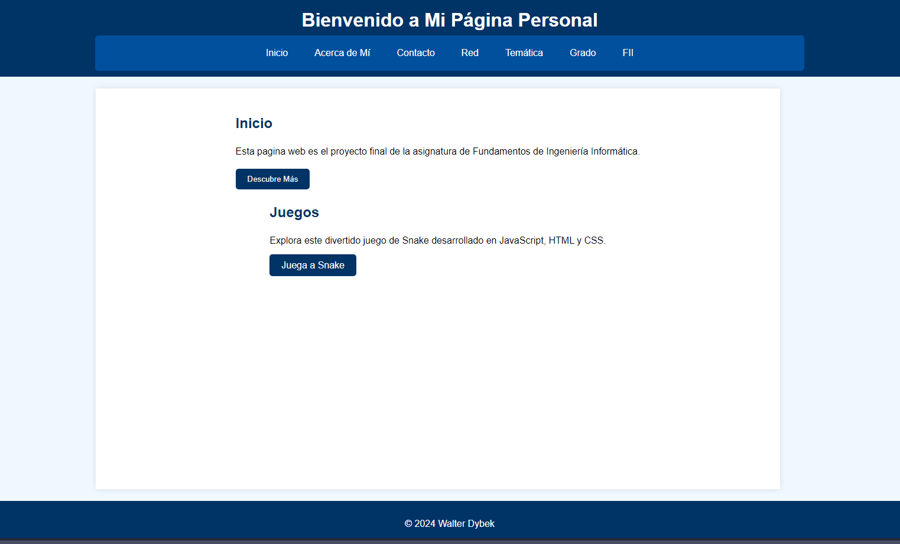
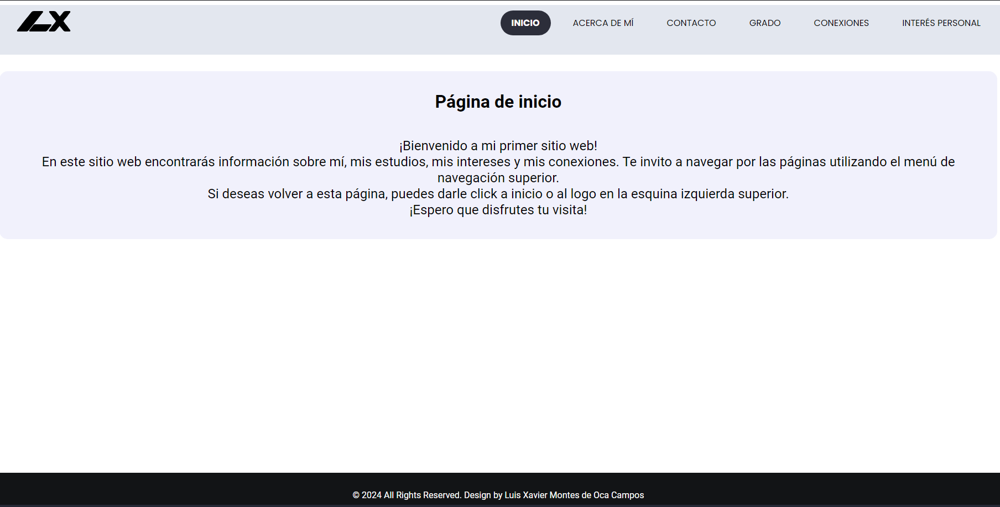
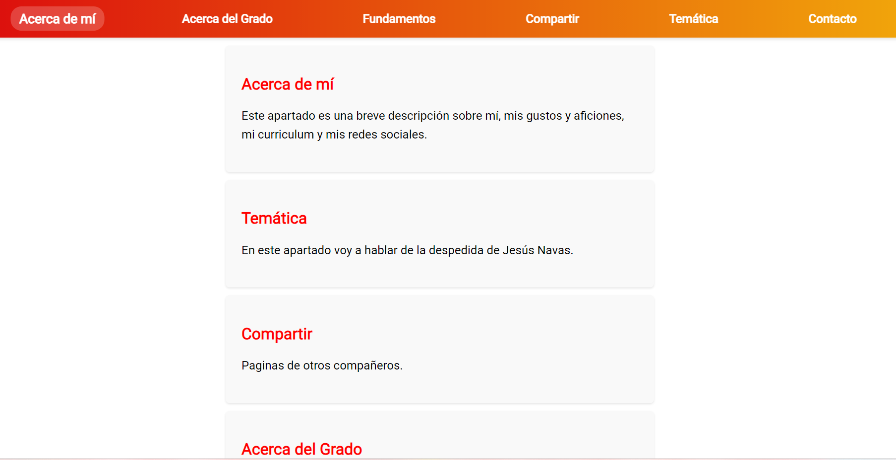
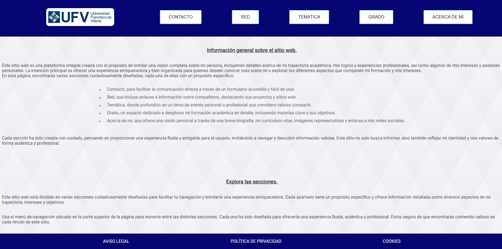
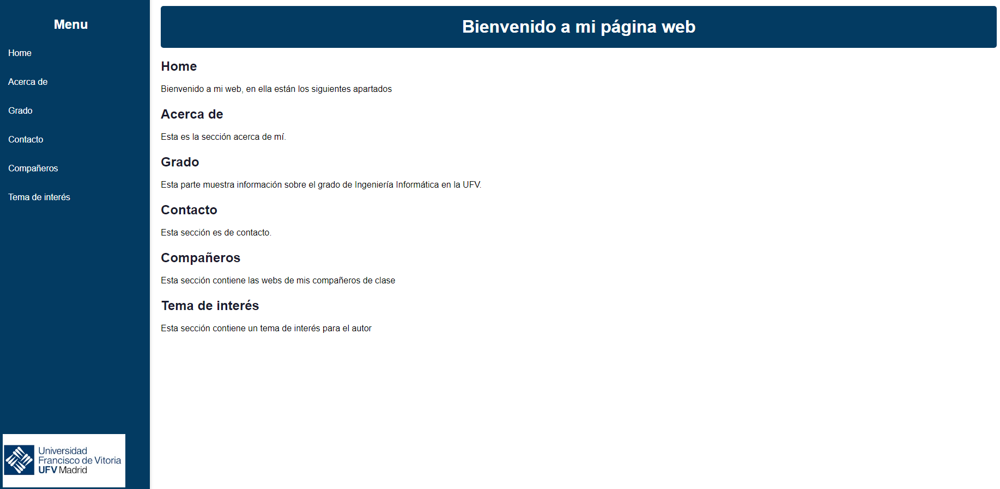
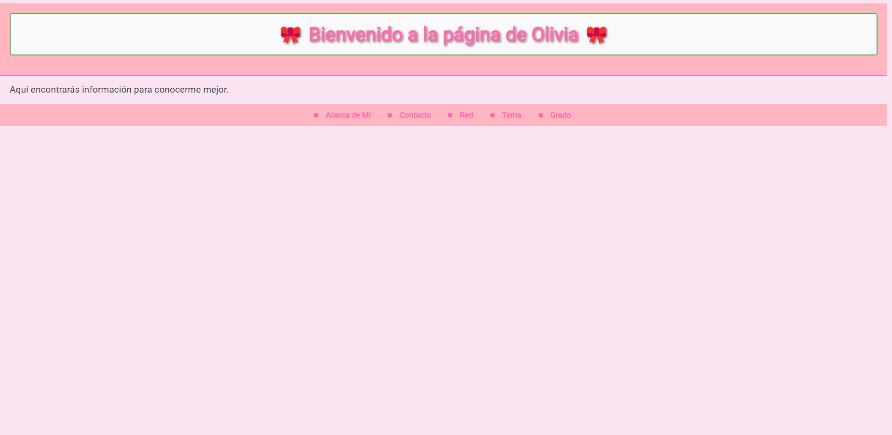

Mi Sitio Web
Inicio
Acerca de Mí
Tema
Red
Contacto
Mi Grado
Páginas de Compañeros
Walter Dybek Sánchez

Luis Xavier Montes de Oca

Jaime Poyatos Suárez

Manuel Cencerrado Pedrero

Jaime José Díaz Palacios

Olivia Ruiz Batalla
